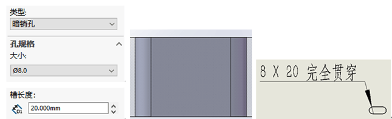

自定义孔标注
简介
Solidworks孔标注默认会有很多内容。但对标注样式有定制要求的话，就需要制作符合自己标准的异型孔标注格式。
在自定义孔标注之前呢，我先大致说明下其语法格式。以下内容均以GB标准。
例子
下面将举一个例子演示：对孔标注做简化操作说明。
a)去除不必要的空格；
b)去除“完全贯穿”（有些会写THR）；
c)去除螺纹精度“-6H”等{看需要}；
d)去除螺纹底孔（一般可以不标）；
方法：
打开“calloutformat.txt”文件，通过菜单“编辑”、用“查找”、”替换”的办法，即可很方便的解决问题：去掉前后空格：替换字符“（空格）<”为“<”、替换“>（空格）”为“>”；
“-6H”：直接替换去除；同理替换去除螺纹底孔：去除和字符串“”、“”、 “”、“”、“”；
语法
相关的“calloutformat.txt”文件字符串含义：
“*”：后面是注释
“HOLE-BLIND(csns)=”：孔类型，
后面就是标注样式： X ,
“\”：换行
孔类型9种：
柱状沉头孔Counterbore
通 孔格式：
沉头孔格式：
锥形沉头孔Countersink
通 孔格式：
沉头孔格式： X
锥形沉头孔只有“远端圆角”，正常也是不用设置，标注螺纹利边倒角即可。
孔Hole
格式：
直螺纹孔Straight Tap
牙孔： x - 6H
钻孔：
锥形螺纹孔Tapered Tap
锥螺纹格式：
钻 孔格式：
旧制孔Legacy Hole
柱孔沉头孔槽口Counterbore Slot
槽 口格式： X
沉头孔格式：
锥形沉头孔槽口Countersink Slot
槽 口格式： X
沉头孔格式： X
槽口Slot

槽 口格式： X
端面锥孔（通用）
倒角设置（一般不用）
近端锥孔格式： X ,
中端锥孔格式： X ,
远端锥孔格式： X ,
其他内容
1
2
3
4
5
6
7
8
9
10
11
12
13
14
15
16
17
18
19
20
21
22
23
24
25
26
27
28
29
30
31
32
33
34
35
36
37
38
39
40
41
42
43
44
45
46
47
48
49
50
51
52
53
54
| 标注变量
<hw-std> ：标准
<hw-slot-width> ：槽口宽度
<hw-slot-length> ：槽口长度
<hw-cdrldepth> ：沉头坑深度
<hw-cdrldia> ：沉头坑直径
<hw-minordia> ：次直径
<hw-cdrlang> ：导头角度
<hw-thru> ：贯穿
<NUM_INST> ：计数
<hw-threaddiaonly> ：仅螺纹直径
<hw-msgnearside> ：近端
<hw-nscsang> ：近端锥形沉头孔角度
<hw-nscsdia> ：近端锥形沉头孔直径
<hw-holedepth> ：孔深度
<hw-holedia> ：孔直径
<hw-fstsze> ：扣件大小
<hw-fsttyp> ：扣件类型
<hw-headclr> ：螺钉间隙
<hw-threadsize> ：螺纹大小
<hw-threadclass> ：螺纹等级
<hw-threadang> ：螺纹角度
<hw-tapdrldepth> ：螺纹孔钻头深度
<hw-tapdrldia> ：螺纹孔钻头直径
<hw-threaddepth> ：螺纹深度
<hw-threaddesc> ：螺纹说明
<hw-threadseries> ：螺纹系列
<hw-threaddia> ：螺纹直径
<hw-depth> ：深度
<hw-descrp> ：说明
<hw-thrutapdrldp> ：通孔螺纹孔钻头深度
<hw-thrutapdrldia> ：通孔.螺纹孔钻头直径
<hw-thruholedepth> ：通孔深度
<hw-thruholedia> ：通孔直径
<hw-msgfarside> ：远端
<hw-fscsang> ：远端锥形沉头孔角度
<hw-fscsdia> ：远端锥形沉头孔直径
<hw-diam> ：直径
<hw-msgmidside> ：中端
<hw-midcsang> ：中间锥形沉头孔角度
<hw-midcsdia> ：中间锥形沉头孔直径
<hw-mjrdia> ：主直径
<hw-cbdepth> ：柱坑深度
<hw-cbdia> ：柱坑直径
<hw-counterbore> ：柱孔肩
<hw-csang> ：锥坑角度
<hw-csdia> ：锥坑直径
<hw-drlang> ：钻头角度
标注符号
<HOLE-SINK> ：V
<HOLE-DIAM> ：φ
<HOLE-DEPTH> ：↓
<MOD-PM> ：±
<HOLE-SPOT> ：凵
|